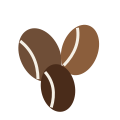

Классика и авторские
От эспрессо до модного эспрессо-тоника.
Мы обжариваем зёрна арабики вручную и готовим напитки на профессиональной кофемашине. Первая чашка — в подарок при подписке на новости.
С ценами можно ознакомиться в разделе «Меню», а с историей кофейни — в разделе «О нас».
От эспрессо до модного эспрессо-тоника.

Зёрна из Эфиопии, Колумбии и Бразилии. Обжарка каждую неделю.
Круассаны, брауни и чизкейк — с утра до вечера.